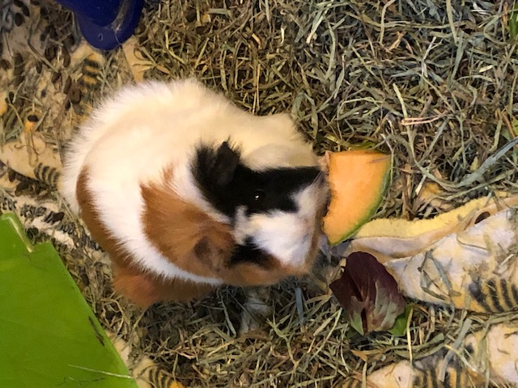

Reviews

🌸 Give, even if you only have a little. 🌸

Christy is the best. She's kinda like seeing Willie Nelson perform live. Never disappoints.

Christy is so purr-fessional & paws-itive! 🐾

It's dangerous to go alone! Take this 👅

❮
❯
Christy is one in a melon ğŸˆ